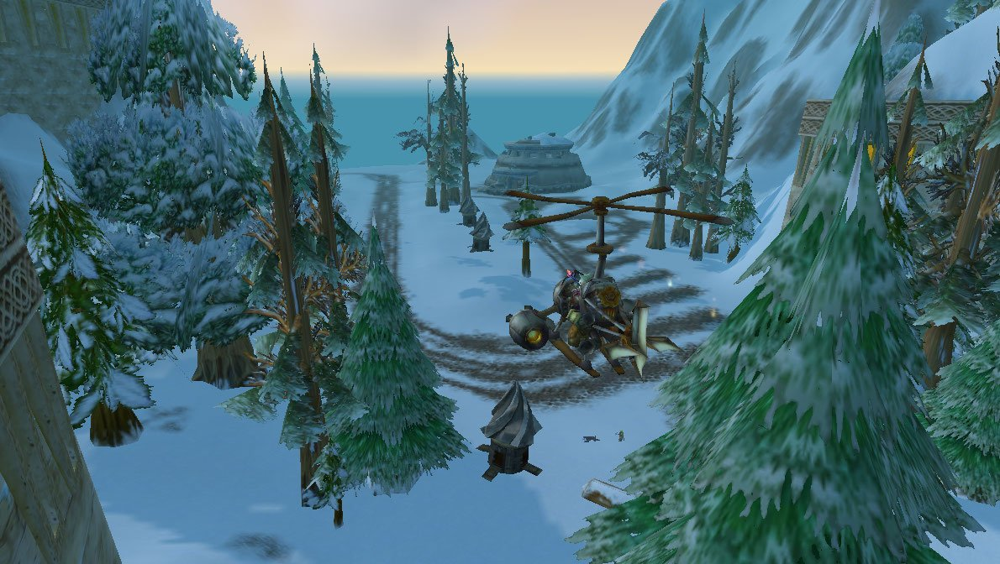
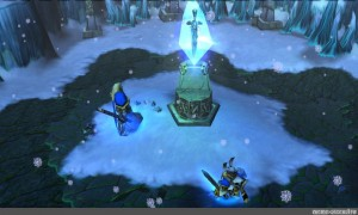
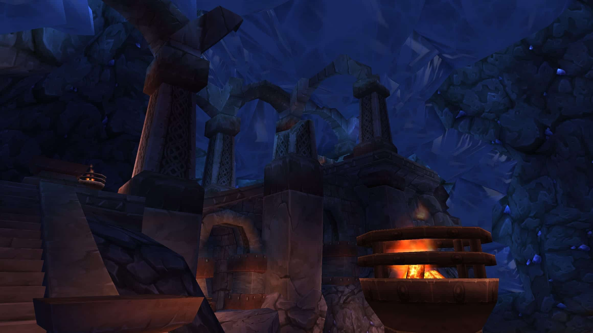
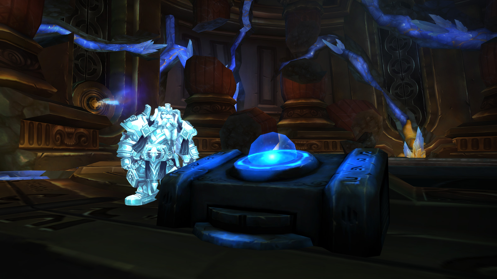

La historia de esta ciudad se remonta hasta el evento conocido como la maldición de la carne. Cuando los enanos y los gnomos se volvieron de carne y hueso y comenzaron a cavar hacia el exterior de la tierra.
| Contenidos |
|---|
| Creación de Forjaz |
| La Guerra de los Tres Martillos |
| La Segunda Guerra |
| La Tercera Guerra |
| El Regreso del Rey Exánime y el Cataclismo |
| Asedio de la Legión |
Fue construida 800 años después de la implosión del Pozo de la Eternidad por los primeros enanos de carne que despertaron en Uldaman. Excavada en el corazón de las montañas de Khaz Modan, se trata de un profundo subterráneo hogar de exploradores, mineros y guerreros. Sus enormes puertas de piedra protegen la ciudad en tiempos de guerra, y la lava de la montaña es redirigida y distribuida para calefacción, energía y propósitos de herrería.
| La paz entre los enanos perduró al pasar de los siglos hasta la muerte del rey Modimos Yunquemar, tras no dejar heredero al trono, se generó gran tensión entre los tres grandes clanes de enanos: los Barbabronce, los Martillosalvaje y los Hierronegro. La batalla dentro de Forjaz terminó con la victoria de los Barbabronce y la expulsión de los otros clanes, de los cuales los Martillo salvaje se desplazaron hasta el noroeste de Khaz Modan y los Hierro negro al sur del mismo reino. La guerra continuó fuera del país de Dun Morogh, constantes conflictos principalmente entre el clan Hierronegro con los Barbabronce y los Martillosalvaje. Lo que concluiría con la última batalla en Grim Batol (la ciudad de los Martillosalvaje) en donde se desataría una maldición que dejaría esa ciudad inhabitable. Al mismo tiempo, y también catalizador de una "paz" momentánea entre los clanes, en el sur, en la ciudad del clan Hierronegro "Forjatiniebla", en la realización de conjuros para la batalla, liberarían al señor elemental Ragnaros, lo que desencadenaría la destrucción de gran parte del sur del reino de Khaz Modan. |
Ciudades referencia: |
Ciudades referencia:
Ciudad de Forjaz
Ciudad de Grim Batol
Ciudad de Forjatinieblas
| Durante la Segunda Guerra, Forjaz fue la única gran capital que no fue invadida por los orcos invasores de la Horda orca. Tras la caída de la ciudad de Ventormenta y el traslado de los humanos a Lordaeron, los enanos fueron los únicos que resistieron el embite enemigo aunque a costa de perder numerosos emplazamientos. Cuando se forjó la Alianza de Lordaeron, Forjaz fue decisiva dando cobertura a la Alianza debido a su situación estratégica en los picos invernales de Dun Morogh y protegida por sus grandes portones y fabricando munición y máquinas de guerra. | Base aérea de forjaz |
Base aérea de forjaz
| Durante la tercera guerra el entonces rey Magni envió centenares de tropas de enanos en la ayuda con los humanos de Lordaeron. Aunque en la ciudad no ocurrieron grandes hechos en esta guerra, lo más destacable fue la expedición a Rasganorte por parte del hermano del rey, Muradin Barbabronce. Expedición en la cual el entonces principe de Lordaeron Arthas Menethil traicionaría al enano dejándolo abandonado tras apuñalarlo, generando así incertidumbre en la familia Barbabronce pensando que había muerto por los siguientes años | Magni Barbabronce y Arthas Menethil |
Magni Barbabronce y Arhas Menethil
| Años después, con el retorno del Rey Exánime en Rasganorte, las expediciones de retorno a este inhóspito lugar (que desde la traición de Arthas no había sido explorado más que por los pobladores de Dalaran) volvieron, ahora bajo las ordenes de Brann Barbabronce (el menor de los tres hermanos Barbabronce). Después de semanas de expedición, en las profundidades de Uldum, se encontraría a Muradin con vida. Así, él pasaría a líderar las expediciones por parte de los enanos hasta el asedio de la Corona de Hielo. Con el fin del Rey Exánime, la paz parecería volver en todo el mundo, pero, y tras leer lo que parecían ser maldiciones de Uldum, el rey Magni Barbabronce quedaría petrificado en diamante en la "antigua forjaz". Provocando conmoción en la ciudad, donde no sabían quién debería heredar el trono. Así fue como aparecieron nuevamente los otros dos clanes: el Hierronegro y el Martillosalvaje. Llegando así, la hija y verdadera heredera al trono, Moira, por parte de los Hierronegro y Falsad por parte de los Martillosalvaje. Tras días de bastante tensión se descidió crear un concilio que liderara el reino de Khaz Modan, denominado el "concilio de los tres martillos". Concilio que hasta la actualidad sigue tomando las descisiones políticas del reino. | Antigua Forjaz, lugar donde Magni Barbabronce cayó en la maldición |
Antigua Forjaz, lugar donde Magni Barbabronce cayó en la maldición
| Tuvieron que pasar varios años para que algo relevante sucediera en Forjaz, el rey Magni Barbabronce despertaría de su estado de piedra para advertir a todas las razas la llegada de la mayor amenaza que el planeta había enfrentado desde la imploción del pozo de la eternidad: la segunda llegada de la Legión Ardiente. Explicando que todos esos años había estado comunicándose con la tierra y ahora sería el "mensajero de la tierra", para advertir sobre las amenazas próximas en la tierra. | Magni en el corazón de azeroth (planeta de World Of Warcraft) |
Magni en el corazón de azeroth (planeta de World Of Warcraft)